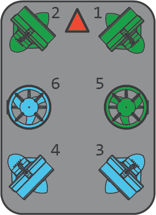
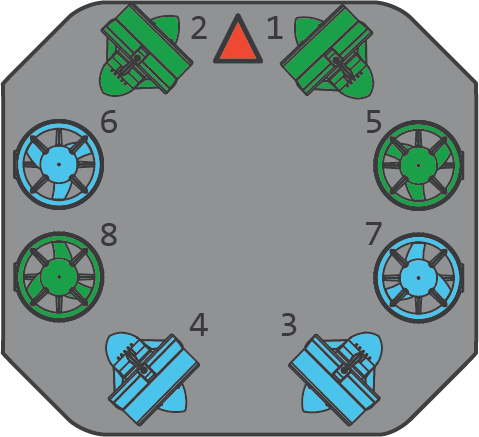
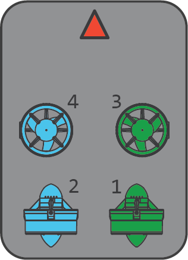

Features
ArduSub has many features including:
- Built-in support for several vehicle frame options and motor configurations (custom configurations are possible too)
- High extensibility in software and hardware for customization
- Attitude and Heading Reference System (AHRS) and Inertial Navigation Filter (EKF)
- Extensive user-configurable parameter system
- Well developed ground control station software for piloting and configuration
- Compatibility with many development tools targeting MAVLink-enabled vehicles
- Sensor and data logging
- No Programming Required
Supported Frames
ArduSub includes a high-level motor library that can configure motors in any configuration. This library is used to implement a number of supported frame configurations. All configurations are shown from top-down view. Green thrusters indicate counter-clockwise propellers and blue thrusters indicate clockwise propellers (or vice-versa). Currently supported are:

BlueROV1 Configuration with 6-DOF thruster positioning. (Frame: |

Vectored ROV with side-by-side vertical thrusters. Used for the BlueROV2. (Frame: |

Vectored ROV w/ Four Vertical Thrusters, an 8-thruster configuration with 6-DOF control and heavy-lifting capacity. Used for the BlueROV2 Heavy. (Frame: |

ROV with a single vertical thruster. (Frame: |

ROV with side-by-side vertical thrusters. (Frame: |

ROV with a lateral thruster and side-by-side vertical thrusters. (Frame: |
Supported Hardware
The ArduPilot project has support for a great variety of hardware platforms. ArduSub firmware is provided for many of these platforms, but only the Pixhawk 1 is fully tested and supported.
These are platforms that have been reported to work with ArduSub:
- Pixhawk
- Pixhawk 2
- Pixhawk Mini
Please let us know if you have tested ArduSub on another platform!
Capabilities
- Feedback control and stability: Based on a multicopter autopilot system, the ArduSub controller has accurate feedback control to actively maintain orientation.
- Depth hold: Using pressure-based depth sensors, the ArduSub controller can maintain depth within a few centimeters.
- Heading hold: By default, the ArduSub automatically maintains its heading when not commanded to turn.
- Camera Tilt: Camera tilt control with servo or gimbal motors through the joystick or gamepad controller.
- Light Control: Control of subsea lighting through the joystick or gamepad controller.
Extensibility
In addition to the standard onboard sensors (IMU, compass), the ArduSub controller directly supports a number of external sensors including:
- Pressure/depth sensors for measurement and auto depth-hold (such as the Bar30)
Other sensors, and in particular high-bandwidth and specialized sensors, are integrated as Companion sensors, attached to the companion computer and running alongside ArduSub and sharing communication pathways. This allows rapid integration of new and unique payloads and allows you to use the manufacturer's user interface to control the sensor.
Sensors integration via companion includes sensors such as:
- Depth sounders (the Ping Sonar)
- UDP Input of external GPS data from underwater localization systems (such as the Water Linked Underwater GPS)
- Scanning Sonars (the Ping360 Scanning Imaging Sonar)
With upcoming sensors:
- Conductivity sensors